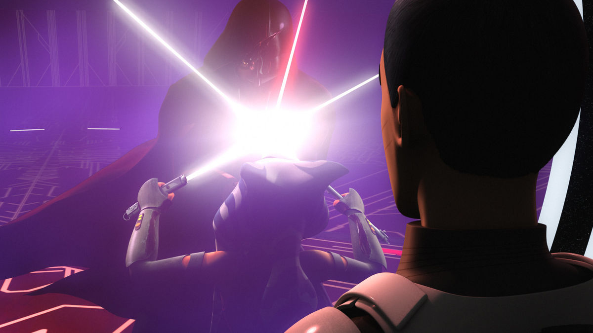
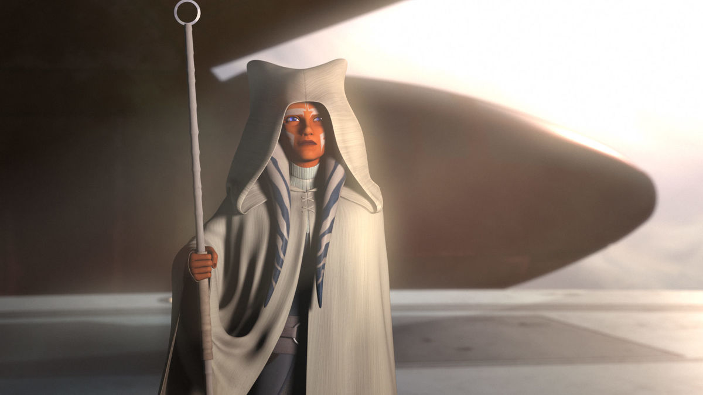

Star Wars fans have been asking a big question for the last ten years: what happens to Ahsoka Tano? It’s a never-ending question. Ahsoka is such a beloved character that no matter where she appears, from Star Wars: The Clone Wars to Star Wars Rebels and beyond, fans will always want to know more. Luckily, the last few episodes of Star Wars Rebels finally gave us some answers!
Ahsoka Escapes Darth Vader
In the episode “DUME,” series protagonist Ezra Bridger mourns the death of his master, Kanan Jarrus. He encounters a massive Loth-wolf, the wolves native to his home world of Lothal, named Dume. The name means something: Kanan’s real name was Caleb Dume. Could Kanan be speaking from the beyond through this wolf? Dume tells Ezra “restore past, save future” and sends him to the Jedi Temple on Lothal, in danger from the Empire.
With help from fellow rebel Sabine Wren, Ezra is able to open a portal in the Jedi Temple and enters the world between worlds. This is a place that exists outside of space and time. It’s a pathway between all events, and he can even hear voices from all three Star Wars trilogies, Rogue One, and both television shows. He soon encounters a portal that shows him the past: Ahsoka’s duel with Darth Vader, seen in the second season finale “Twilight of the Apprentice.”
We never saw what happened to Ahsoka in the final moments of that fight, because Ezra never saw what happened. This story gave us our answer: the duel continued, and just before the Sith Temple they fought in exploded, Ezra reached through time and pulled Ahsoka into the world between worlds. The Emperor soon found a way to reach in as well, trying to capture Ahsoka and Ezra, but they escaped. Ezra went back to his time, and Ahsoka went back to the past, in the moments after the Sith Temple exploded.
Finding Ezra
Before Ahsoka went back to her time, Ezra asked her to come find him. What neither of them could have known was the implications of that statement. In the series finale, as Lothal is liberated, Ezra is lost into hyperspace, having seemingly sacrificed himself to save Lothal. Sabine and the other rebels continued to look out for Lothal, just as Sabine believed Ezra wanted . Before he disappeared, he told Sabine he was counting on her. The finale ends with a look ahead, to a time after the Battle of Endor and the original trilogy. Sabine stands watch over Lothal, but she now realizes what Ezra really meant. He wants her to come find him. As she looks at a mural depicting her, Ezra, and the other rebels, she looks behind her and finds her guide for the quest to find Ezra. It’s Ahsoka Tano, returning in a very Gandalf the White fashion. Together, Sabine and Ahsoka head off to find their old friend and bring him home.
Ahsoka's Journey Continues
We don’t know what stories Lucasfilm will tell next with Ahsoka, Sabine, and Ezra, but we can bet that we haven’t seen the last of them. Ahsoka, along with Sabine, now has the opportunity to guide yet another new generation of heroes. Just as it was in Rebels, that now appears to be one of her roles in the saga. She’s the mentor, helping to forge the future and span all eras of Star Wars storytelling.
It’s really exciting to know Ahsoka lives beyond the original trilogy. When she was first introduced, fans debated whether she could survive The Clone Wars. After all, she wasn’t in Star Wars: Episode III Revenge of the Sith, so surely she had to die, right? That assumption was shattered when she appeared in Star Wars Rebels, but a new one was born from it. Surely Vader, her old master, would have to kill her.
If there’s one thing we know about Ahsoka, it’s that she always comes back — and her journey continues.